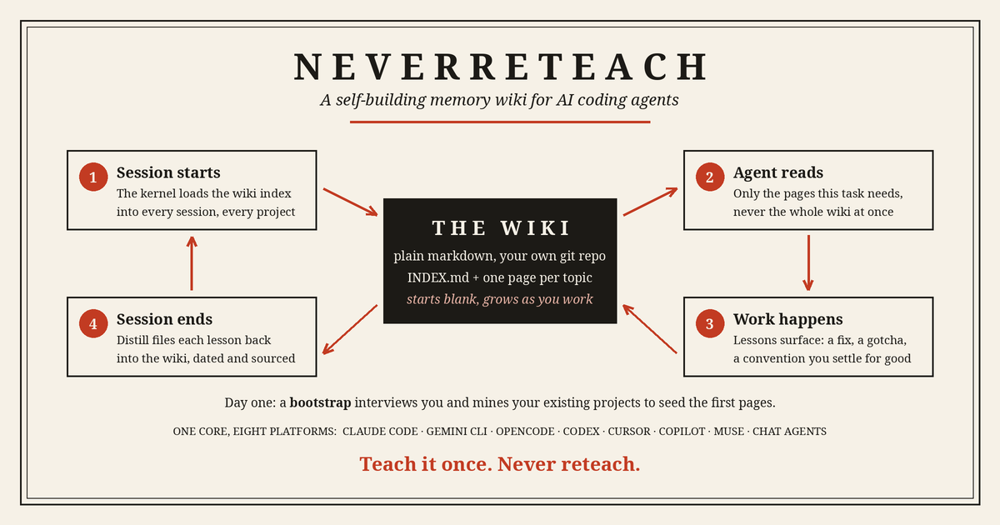

EXP-08
NeverReteach
A self-building memory wiki for AI coding agents. Teach each lesson once; the agent files it, dates it, and loads it on every future project.
LIVE, OPEN SOURCE

BUILT
A memory kit for AI coding agents. A small kernel of protocols lives in the platform's always-loaded instruction file. The knowledge lives in a wiki of plain markdown files, one topic per page, in its own git repo that starts completely blank. The agent reads the index at session start, loads only the pages a task needs, and files new lessons at session end through six commands: remember, recall, distill, intake, seed-from-projects, and weekly-review. A librarian audits the wiki for duplicates and stale claims. The kernel and wiki format exist once, platform-neutral; a render script turns that core into adapters for eight platforms. Built on October 20 and 21, 2026, for my dad, a Claude Code user who re-taught the same lessons on every new app.
WHAT BROKE
The hard parts were the platforms, not the idea. Cursor's hooks are still beta, so its adapter runs instructions-only. Copilot's prompt files were a public preview when I built against them. The Windows installer was rewritten but never executed: there is no PowerShell on my machine to test it, and the platform docs say exactly that. And the closest existing kit had tried background auto-capture and retired it; a hook that blocks at the wrong moment can wedge a session, so every guard here is non-blocking by design.
HOW I JUDGE IT
Each adapter was installed into a sandbox and detection-tested: the installer finds a platform by its config directory or its binary, installs the right files, and backs up anything it replaces first. The wiki has to start empty and stay the user's own repo. The bootstrap's drafts are shown for approval before anything is filed. Anything I could not verify is flagged unverified in the docs rather than smoothed over.
RESULTS
Public on GitHub on October 21, 2026, MIT licensed and free. Eight platforms from one core: full tier with hooks or a plugin (Claude Code, Gemini CLI, OpenCode), instructions-only (Codex, Cursor, GitHub Copilot), and hosted packs (Muse, chat agents). Cost discipline is the design constraint: index-first loading, zero LLM hooks, nothing runs between sessions, one batched distill per session. A memory system that eats your usage budget is worse than no memory.